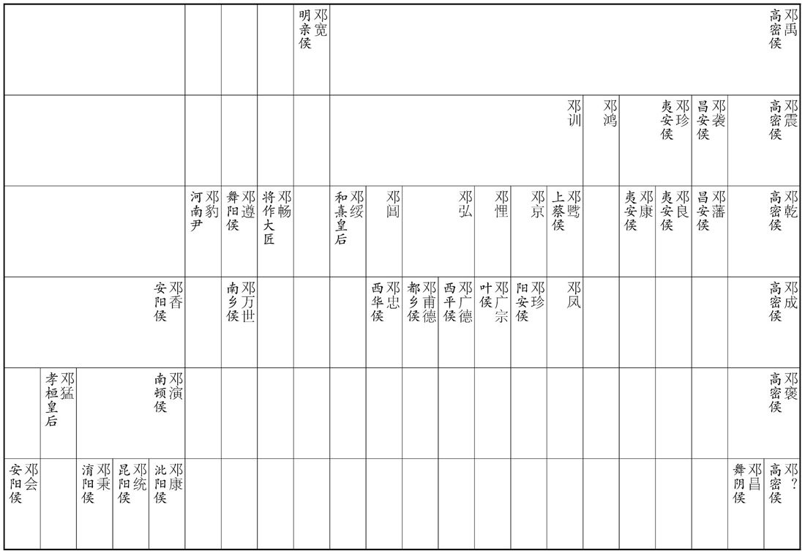
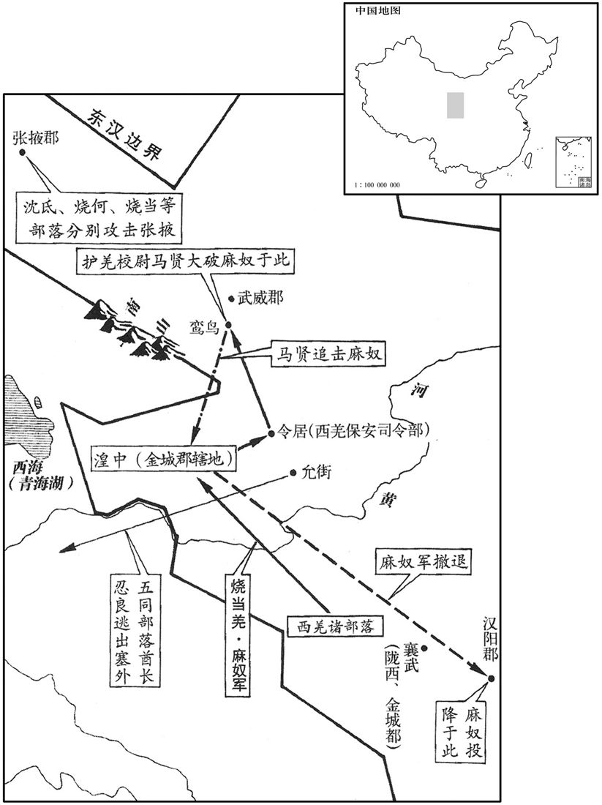

公元121年资治通鉴：本年记事、原文与白话对照
按原书编年位置阅读；追叙和史论不等于本年发生的事件。白话采用所据译本，缺译不以生成译文补齐。
卷50 · 本年记事
公元121年 · 汉孝安皇帝建光元年
建光元年〔（辛酉、一二一）是年七月改元。考异曰：陈禅传曰：「北匈奴入辽东，追拜
上传原文的注释括号有异常，字符原样保留；无法可靠划分的段落默认全文显示。
本年事件索引（现代整理）
- 司马光考辨辽东太守招降北单于之说不可信
- 马贤诱杀羌人首领，驱逐忍良等部
- 高句丽诈降突袭辽东，造成伤亡
- 邓太后病逝，邓骘重新受封
- 邓太后葬于和熹陵
- 邓太后节俭赈灾，使天下复平
- 安帝征召杜根、成翊世，恢复直谏之士官职
- 安帝追尊生父母与祖母，蔡伦下狱自杀
- 高句丽与鲜卑再犯辽东，蔡讽等战死
- 安帝尊嫡母耿姬为甘陵大贵人
- 刘苌因骄淫不法被贬为芜湖侯
- 陈忠请安帝宽容直言，广开进谏之路
- 薛包孝养父母，拒绝分家弃亲
- 安帝清算邓氏，邓骘父子绝食而死
- 陈忠借机上书攻击邓氏，排挤旧怨
- 朱宠为邓骘申冤，邓氏遗骸得以归葬
- 邓太后去世后，阎氏与宋氏外戚渐盛
- 杨震谏王圣专权，斥责外戚内宠干政
- 杨震、翟酺反对伯荣因婚受封
- 改元永宁，大赦
- 马英去世
- 麻奴等羌人攻掠湟中，马贤迎战失利
- 刘恺任太尉，反对禁锢官吏子孙
- 鲜卑围攻马城，汉军救援解围
- 安帝厚待冯石一家
- 二十七郡国水灾
- 三十五郡国地震
- 鲜卑入寇玄菟
- 陈忠反对再次禁止大臣服三年丧
- 袁宏论丧制应顺人情，不可强断哀礼
- 夫余王击败高句丽，安帝拒绝趁丧伐之

本年形势与背景参考图
禅辽东太守。胡惮其威强，退还数百里。禅不加兵，但遣吏卒往晓慰之。单于随使还郡，禅于学行礼，为说道义以感化之，单于怀服，遗以胡中珍货而去。」当在此年矣。又按北单于，汉朝所不能臣，未尝入朝天子，安肯见辽东太守！此事可疑，今不取。余按和帝以来，北匈奴益西徙，自代郡以东至辽东塞外之地，皆鲜卑、乌桓居之，北单于安能至辽东邪！不取，当也。〕
本段缺少可靠对应白话，原文完整保留；未使用生成译文。
春，护羌校尉马贤召虑忽喹斩之，因放兵击其种人，获首虏二千余，忍良等皆亡出塞。
春季，护羌校尉马贤征召卢，将他斩杀，乘机发兵攻击卢的部众，斩杀两千余人。忍良等全部逃亡出塞。
幽州刺史巴郡冯焕、玄菟太守姚光、辽东太守蔡讽等将兵击高句骊，高句丽王宫遣子遂成诈降而袭玄菟、辽东，杀伤二千余人。〔菟，同都翻。句，如字，又音驹。丽，读曰骊，力知翻。降，户江翻。〕
幽州刺史巴郡人冯焕、玄菟郡太守姚光、辽东郡太守蔡讽等率兵进攻高句丽，高句丽国王宫派遣他的儿子遂成诈降而袭击玄菟郡和辽东郡，杀伤二千余人。
二月，皇太后寝疾，癸亥，赦天下。三月，癸巳，皇太后邓氏崩。未及大敛，帝复申前命，〔敛，力赡翻。复，扶又翻；下同。〕封邓骘为上蔡侯，位特进。〔封骘事见上卷永初元年。〕
二月，邓太后卧病。癸亥（十二日），大赦天下。三月癸巳（十三日），邓太后驾崩。还未等到大敛，安帝便重申先前发布的命令，将邓骘封为上蔡侯，位居特进。
丙午，葬和熹皇后。〔范晔曰：汉世皇后无谥，皆因帝谥以为称，虽吕氏专政，上官临制，亦无殊号。中兴，明帝始建光烈之称，其后并以德为配，至于贤愚优劣，混同一贯，故马、窦二后，俱称德焉。其余皇帝之庶母及蕃王承统，以追尊之重，特为其号，恭怀、孝崇之比是也。初平中，蔡邕始追正和熹之谥，其安思、顺烈以下，皆依而加焉。贤注云：蔡邕集谥议曰：汉世母后无谥，明帝始建光烈之称，是后转因帝号加之以德，上下优劣，混而为一，违礼「大行受大名、小行受小名」之制。谥法：有功安曰熹，帝后一体，礼亦宜同，大行皇太后宜为和熹。〕
丙午（二十六日），安葬邓太后。
太后自临朝以来，水旱十载，〔载，子亥翻。〕四夷外侵，盗贼内起，每闻民饥，或达旦不寐，躬自减彻〔谓减膳彻乐之类。〕以救灾繍，故天下复平，岁还丰穰。〔和熹临朝之政，可谓牝鸡之晨，唯家之索矣。〕
自从邓太后临朝摄政以来，水旱灾害达十年，四方异族从外入侵，盗贼叛匪在内纷起。每当听说民间饥馑，邓太后往往通宵不眠，亲自裁膳撤乐，削减个人享受，以拯救灾难。因此天下重新安定，恢复了丰收年景。
上始亲政事，尚书陈忠荐隐逸及直道之士颍川杜根、平原成翊世之徒，上皆纳用之。忠，宠之子也。初，邓太后临朝，根为郎中，与同时郎上书言：「帝年长，宜亲政事。」〔长，知两翻。〕太后大怒，皆令盛以缣囊，于殿上扑杀之，〔盛，时征翻。扑，普卜翻，蜀本弼角切。」既而载出城外，根得苏；太后使人检视，根遂诈死，三日，目中生蛆，〔蛆，子余翻。凡蝇所集，其遗子之处生为蛆。〕困得逃窜，为宜城山中酒家保，积十五年；〔宜城县，属南部。贤曰：宜城故城，在今襄州率道县南，其地出美酒。广雅云：保，使也，言为人佣力保任而使也。〕成翊世以郡吏亦坐谏太后不归政抵罪；帝皆征诣公交车，拜根侍御史，翊世尚书郎。〔为诸邓得罪张本。〕或问根曰：「往者遇祸，天下同义，〔天下之士以根直谏遇祸，同义之也。〕知故不少，〔少，诗沼翻。〕何至自苦如此﹖」根曰：「周旋民间，非绝迹之处，邂逅发露，〔邂逅，不期而会，谓出于意料之外也。〕祸及亲知，故不为也。」〔申屠蟠绝迹、砀，祖根之故智也。〕
安帝开始亲自接管政事。尚书陈忠举荐“隐逸”及“直道”之士颍川人杜根、平原人成翊世等人，安帝全部接纳而予以任用。陈忠是陈宠之子。当初，邓太后主持朝政，杜根任郎中，他与当时的一位郎官共同上书说：“皇上已经长大，应当亲自主持政事。”邓太后大怒，命人将他们全都装入白绢制的袋中，在殿上当场打死，然后用车运出城外。杜根苏醒过来，邓太后派人查看尸体时，他便装死。三天之后，他的眼中长出了蛆虫，才得以逃走，成为宜城山中一家酒铺的佣工，长达十五年。成翊世原是郡府的官吏，也因劝谏邓太后归还大权而被判罪。安帝命二人前往公车——主管征召事务的官署报到，将杜根任命为侍御史，将成翊世任命为尚书郎。有人问杜根说：“从前您遇到灾祸时，天下人都认为您是义士，您的知交故人不少，何至于让自己这样受苦？”杜根说：“奔走躲藏于民间，那不是隐匿踪迹的处所，一旦被人碰见而暴露身份，就会给亲友带来灾祸，所以我不肯那样作。”
戊申，追尊清河孝王曰孝德皇，皇妣左氏曰孝德后，祖妣宋贵人曰敬隐后。〔尊其所自出也。谥法：执义行善曰德；绥柔士民曰德；不显尸国曰隐；见美坚长曰隐。」初，长乐太仆蔡伦受窦后讽旨诬陷宋贵人，〔事见四十六卷章帝建初七年。乐，音洛。〕帝敕使自致廷尉，伦饮药死。〔自致廷尉者，使其自诣狱。〕
两版字句有差异，建议核对原文。
戊申（二十八日），安帝将生父、清河孝王刘庆追尊为孝德皇，生母左氏为孝德后，祖母宋贵人为敬隐后。当初，长乐太仆蔡伦曾秉承窦皇后的旨意诬陷宋贵人，安帝命他自己前往廷尉受审。蔡伦服毒而死。
夏，四月，高句丽复与鲜卑入寇辽东，蔡讽追击于新昌，战殁。〔新昌县，属辽东郡。〕功曹掾龙端、兵马掾公孙酺以身扞讽，俱殁于陈。〔范书东夷传作「功曹耿耗、兵马掾龙端。」酺，音蒲。陈，读曰阵。〕
夏季，四月，高句丽又和鲜卑一同入侵辽东郡。辽东太守蔡讽在新昌追击敌军，战死。功曹掾龙端、兵马掾公孙奋身保卫蔡讽，一同阵亡。
丁巳，尊帝嫡母耿姬为甘陵大贵人。〔郡国志：清河郡厝县，帝改名甘陵。贤曰：甘陵，孝德皇之陵也，因以为县，在今贝州清河县东。宋白曰：贝州清河县，本周甘泉氏之地，秦、汉为信城县，后汉为厝县，桓帝改为甘陵，故城在今县西北。清河王庆陵，在今清河郡东南三十里故厝城。〕
四月丁巳（初七），安帝将嫡母耿姬尊为甘陵大贵人。
甲子，乐成王苌坐骄淫不法，贬为芜湖侯。〔范书纪、传皆作「临湖侯」。贤曰：临湖县属庐江郡。〕
四月甲子（十四日），乐城王刘苌因骄奢淫逸，触犯法律，被贬为芜湖侯。
己巳，令公卿下至郡国守相各举有道之士一人。尚书陈忠以诏书既开谏争，〔争，读曰诤。〕虑言事者必多激切，或致不能容，乃上疏豫通广帝意曰：「臣闻仁君广山薮之大，〔贤曰：左氏传曰：川泽纳污，山薮藏疾，瑾瑜匿瑕，国君含垢，天之道也。〕纳切直之谋，忠臣尽謇谔之节，不畏逆耳之害，〔易曰：王臣蹇蹇。晋王豹传作「謇」。史记赵简子曰：众人之唯唯，不如周舍之谔谔。家语：孔子曰：忠言逆耳而利于行也。〕是以高祖舍周昌桀、纣之譬，〔周昌尝燕入奏事，高祖方拥戚姬，昌还走，帝逐得，骑昌项，问曰：「我何如主﹖」昌仰曰：「陛下即桀、纣之主！」上笑，自是心惮昌。舍，读曰舍。〕孝文喜袁盎人豕之讥，〔事见十三卷文帝二年。〕武帝纳东方朔宣室之正，〔事见十八卷武帝元光五年。〕元帝容薛广德自刎之切。〔事见二十八卷元帝永光元年。刎，武粉翻。〕今明诏崇高宗之德，推宋景之诚，引咎克躬，谘访群吏。〔时诏公卿百僚各上封事。〕言事者见杜根、成翊世等新蒙表录，显列二台，〔贤曰：谓根为侍御史，翊世为尚书郎也。余按汉制，尚书、御史皆曰台。〕必承风响应，争为切直。若喜谋异策，宜辄纳用；如其管穴，妄有讥刺，〔贤曰：管穴，言小也。史记：扁鹊曰：若以管窥天，以隙视文。隙，即穴也。〕虽苦口逆耳，不得事实，且优游宽容，以示圣朝无讳之美；若之道之士对问高者，宜垂省览，〔省，悉景翻。〕特迁一等，以广直言之路。」书御，〔御，进也。书御，书进而经览也。〕有诏，拜有道高第士沛国施延为侍中。〔有道高第，举有道，对问为上第也。姓谱：鲁大夫施伯，出于鲁惠公之子子尾字施父。〕
四月己巳（十九日），安帝命令三公九卿，下至郡太守、封国相，各举荐一位“有道”——品德学问优秀的人士。尚书陈忠认为，皇帝既然已经下诏公开征求意见，恐怕提意见的人必定多有激烈的言辞，或许导致皇帝不能相容，于是上书预先开阔皇帝的胸襟。奏书说：“我听说，仁爱的君王开阔自己的胸怀，象高山和湖泽一样博大，容纳尖锐直率的批评，使忠臣能够尽到勇于直言的职责，不怕因讲出逆耳的意见而遭到迫害。因此，高祖不计较周昌将他比作夏桀、商纣，文帝嘉奖袁盎警惕‘人彘’再现的讥讽，武帝采纳东方朔对错用宣室殿招待公主宠臣的批评，元帝宽容薛广德以自刎相逼的举动。如今陛下公布诏书，发扬商王武丁的圣德，推广宋景公的赤诚，引咎自责，征求官员们的批评。议论时事的人看到杜根、成诩世等人新近受到表彰擢用，荣耀地身居御史台和尚书台，必然闻风响应，竞相贡献恳切直率的意见。如果是良谋奇策，应当立即采纳，而如果是狭隘浅陋的管穴之见，或是狂妄的讥讽，尽管难吸取，不顺耳，与事实不符，也请暂且大度宽容，以显示圣明王朝百无禁忌的美德。假若被举荐的人在对答时有高明的见解，则应留意查看，特别提升一级任用，以提倡直率批评，广开言路。”安帝看了奏书，下诏，将有道之士中考试成绩优秀者沛国人施延任命为侍中。
初，汝南薛包，少有至行，父娶□妻而憎包，分出之。包日夜号泣，不能去，〔少，诗照翻。行，下孟翻。号，户刀翻。〕至被驱扑，〔以敲扑欧之也。扑，普卜翻。〕不得已，庐于舍外，旦入酒扫。〔酒，所卖翻；扫，素报翻；又并奴字。〕父怒，又逐之，乃庐于里门，晨昏不废。〔不废定省之礼也。〕积岁余，父母凓而还之。及父母亡，弟子求分财异居；包不能止，乃中分其财，奴婢引其老者，曰：「与我共事久，若不能使也。」〔若，汝也。〕田庐取其荒顿者，〔贤曰：顿，犹废也。〕曰：「吾少时所治，意所恋也。」〔治，直之翻。〕器物取朽败者，曰：「我素所服食，身口所安也。」弟子数破其产，辄复赈给。〕数，所角翻。复，扶又翻。〕帝闻其名，令公交车特征，〔特，独也，独征之，当时无与并者。〕至，拜侍中。包以死自乞，有诏赐告归，加礼如毛义。〔毛义事见四十六卷章帝元和元年。〕
当初，汝南人薛包在少年时就有突出的孝行。薛包的父亲在娶了继母之后，便厌恶薛包，让他分出去另立门户。薛包日夜号哭，不肯离开，以致遭到殴打。不得已，就在房舍之外搭起一个小屋居住，早晨便回家洒扫庭院。父亲发怒，再次把他赶走，他就把小屋搭在乡里大门的旁边，每日早晚都回家向父母请安。过了一年多，他的父母感到惭愧而让他回家。及至父母去世，薛包的侄儿要求分割家财并搬出去居住，薛包不能阻止，便将家产分开，挑出年老的奴婢，说：“他们和我一起作事的时间长，你使唤不动。”田地房舍则选择荒芜破旧的，说：“这些是我年轻时经营过的，有依恋之情。”家什器具则选择朽坏的，说：“这些是我平素所使用的，身、口觉得安适。”侄儿曾屡次破产，薛包总是重新给予赈济。安帝听到了他的名声，便命公车单独将他征召入京。到达后，任命为侍中。薛包以死请求辞官，于是安帝下诏，准许他离官回乡，对他的礼敬优待如同毛义前例。
帝少号聪明，故邓太后立之。及长，多不德，〔少，诗照翻。长，知两翻。〕稍不可太后意；〔言意不以为可也。〕帝乳母王圣知之。太后征济北、河间王子诣京师；〔济，子礼翻。〕河间王子翼，美容仪，太后奇之，以为平原怀王后，留京师。王圣见太后久不归政，虑有之置，常与中黄门李闰、江京候伺左右，共毁短太后于帝，帝每怀忿惧。〔伺，相吏翻。〕及太后崩，宫人先有受罚者怀怨恚，〔恚，于避翻。〕因诬告太后兄弟悝、弘、阊先从尚书邓访取废帝故事，谋立平原王。帝闻，追怒，令有司奏悝等大逆无道，遂废西平侯广宗、叶侯广德、西华侯忠、阳安侯珍、都乡侯甫德皆为庶人，〔忠，阊之子。珍，悝兄京之子。西华、阳安二县，皆属汝南郡。悝，苦回翻。阊，音昌。叶，式涉翻。〕邓骘以不与谋，但免特进，遣就国；〔与，读曰豫。〕宗族免官归故郡，〔邓氏，故南阳人。〕没入骘等赀财田宅。徙邓访及家属于远郡，郡县迫逼，广宗及忠皆自杀。又徙封骘为罗侯；〔罗县，属长沙郡。〕五月，庚辰，骘与子凤并不食而死。骘从弟河南尹豹、度辽将军舞阳侯遵、将作大匠畅皆自杀；〔从，才用翻。〕唯广德兄弟以母与阎后同产，得留京师。复以耿夔为度辽将军，征乐安侯邓康为太仆。〔按范书邓禹传：明帝分禹国为三，封其三子，季子珍为夷安侯。康以珍之子绍封，「乐安」当作「夷安」。郡国志，夷安、高密二县，皆属北海国。贤曰：夷安故城，今高密县外城。〕丙申，贬平原王翼为都乡侯，遣归河间。翼谢绝宾客，闭门自守，由是得免。
安帝在幼年时，人们都说他聪明，所以邓太后将他立为皇帝。但等到长大以后，却有很多不好的品质，渐渐不合太后的心意。安帝的奶娘王圣了解这个情况。邓太后曾征召济北王和河间王的儿子们前来京城，其中，河间王的儿子刘翼相貌堂堂，邓太后认为他不同寻常，便让他做平原怀王刘隆的继承人，留在京城，王圣见邓太后久不归还政权，担心安帝会被废黜，经常同中黄门李闰和江京围在安帝身边，一同诋毁太后，安帝每每感到怨愤和恐惧。及至邓太后驾崩，先前因受处罚而怀恨的宫人便诬告邓太后的兄弟邓悝、邓弘、邓阊曾向尚书邓访索取废黜皇帝的历史档案，策划改立平原王刘翼。安帝听到后，回想往事而大怒，命令有关部门弹劾邓悝等大逆无道。于是废掉西平侯邓广宗、叶侯邓广德、西华侯邓忠、阳安侯邓珍都乡侯邓甫德的爵位，将他们全部贬为平民；邓骘因不曾参与密谋，只免去特进之衔，遣回封国；邓氏宗亲一律免去官职，返回原郡；没收邓骘等人的资财、田地和房产；将邓访及其家属，放逐到边远的郡县。在郡县官员的迫害下，邓广宗、邓忠二人自杀。后又将邓骘改封为罗侯。五月庚辰（初一），邓骘和他的儿子邓凤一同绝食而死。邓骘的堂弟、河南尹邓豹，度辽将军、舞阳侯邓遵，以及将作大匠邓畅，全部自杀。唯独邓广德兄弟因母亲与阎皇后是亲姐妹，得以留在京城。安帝重新任命耿夔为度辽将军。征召乐安侯邓康，任命为太仆。五月丙申（十七日），将平原王刘翼贬为都乡侯，遣回河间。刘翼不再会见宾客，紧闭大门而深居自守，因此得以免罪。
初，邓后之立也，〔见四十八卷和帝永元十四年。〕太尉张禹、司徒徐防欲与司空陈宠共奏追封后父训，宠以先世无奏请故事，争之，连日不能夺；及训追加封谥，禹、防复约宠俱遣子奏〔【章：甲十六行本「奏」作「奉」；乙十一行本同。】〕礼于虎贲中郎将骘，宠不从；故宠子忠不得志于邓氏。骘等败，忠为尚书，数上疏陷成其恶。〔宠之所守是也，忠之所为非也。复，扶又翻。数，所角翻。〕
当初，邓氏立为皇后，太尉张禹、司徒徐防曾打算同司空陈宠一同奏请追封邓皇后的父亲邓训。但陈宠认为前代没有这种奏请先例，便与他们争辩，一连数日不能定夺。及至和帝为邓训追加封号和谥号时，张禹、徐防又约陈宠一同派儿子向虎贲中郎将邓骘送礼祝贺，陈宠不肯答应。因此，陈宠的儿子陈忠在邓氏家族当政时未能得志。及至邓骘等人失势，陈忠被任命为尚书，屡次上书弹劾，终于使邓氏家庭陷于重罪。
大司农京兆朱宠痛骘无罪遇祸，乃肉袒舆榇〔榇，初觐翻。贤曰：榇，亲身棺。〕上疏曰：「伏惟和熹皇后圣善之德，为汉文母。〔贤曰：诗凯风曰：母氏圣善。文母、文王之母太任也。宠言太后有圣善之德，比于文母也。〕兄弟忠孝，同心忧国，〔【章：甲十六行本「国」下有「宗庙有主」四字；乙十一行本同；张校同；退斋校同。】〕社稷〔【章：甲十六行本「社稷」作「王室」；乙十一行本同；退斋校同。】〕是赖；〔贤曰：殇帝崩，太后与骘定立安帝，故曰是赖。〕功成身退，让国逊位，历世贵戚，无与为比，当享积善履谦之佑。〔贤曰：易曰：积善之家，必有余庆。又曰：鬼神害盈而福谦。〕而横为宫人单辞所陷，〔两造火备又无征左者为单辞。横，户孟翻。〕利口倾险，反乱国家，〔论语曰：恶利口之覆邦家者。〕罪无申证，狱不讯鞠，〔贤曰：申，明白也；讯，问也；鞠，穷也。〕遂令骘等罹此酷陷，〔【章：甲十六行本「陷」作「滥」；乙十一行本同。】〕一门七人，并不以命，〔贤曰：七人，谓骘、从弟豹、遵、畅，骘子凤，凤从弟广宗、忠也。〕尸骸流离，冤魂不反，逆天感人，率土丧气。〔丧，息浪翻。〕宜收还耱次，宠树遗孤，奉承血祀，以谢亡灵。」〔贤曰：血祀，谓祭庙杀牲取血以降神也。〕宠知其言功，自致廷尉；陈忠复劾奏宠，诏免官归田里。〔劾，户概翻，又户得翻。〕众庶多为骘称枉者，〔复，扶又翻。为，于伪翻。〕帝意颇悟，乃谴让州郡，〔贤曰：以逼迫广宗等故木。〕还葬骘等于北芒，〔贤曰：北芒山，在雒阳城北，〕诸从兄弟皆得归京师。〔从，才用翻。〕
大司农、京兆人朱宠，痛心于邓骘无罪而遭遇祸难，于是脱光上衣，抬着棺材，上书为邓骘鸣冤。奏书说：“我认为和熹邓皇后具有圣明善良的品德，是汉朝的文母。她的兄弟忠孝，共同忧心国事，受到王室的倚重；迎立皇上以后，大功告成，而引身自退，拒受封国，辞去高位，历代的皇后家庭，都不能与他们相比。他们应当由于善良和谦让的行为而得到保佑，但却横遭宫人片面之辞的诬陷。口舌锋利，危言耸听，扰乱了国家。罪名没有明白的证据，判案也没有经过审讯，结果竟使邓骘等人遭受这样的惨祸，一家七口，全都死于非命，尸骨分散各地，冤魂不能返回家乡，违背天意而震动人心，全国各地一片颓丧。应当准许他们的尸骨还葬祖坟，优待保护留下的孤儿，让邓家的宗祠有人祭祀，以告慰亡灵。”朱宠知道他的言辞激切，自动前往廷尉投案。于是陈忠又弹劾朱宠。安帝下诏将朱宠免官，让他返归乡里。民众多为邓骘鸣冤，安帝有所觉悟，于是责备迫害邓氏家族的州郡官员，准许邓骘等人的尸骨运回北芒山安葬，邓骘的堂兄弟们也都得以返回京城洛阳。
帝以耿贵人兄牟平侯宝监羽林左军车骑；〔羽林分左右监，各主左右骑。宝监，古衔翻。〕封宋杨四子皆为列侯，宋氏为卿、校、侍中大夫、谒者、郎吏十余人；〔校，户教翻。〕阎皇后兄弟显、景、耀，并为卿、校，典禁兵。〔卿、校，九卿及诸校尉也。〕于是内宠始盛。
安帝将嫡母耿贵人的哥哥牟平侯耿宝任命为羽林左军车骑总监，将祖母宋贵人之父宋杨的四个儿子全都封为列侯，宋氏家族中担任卿、校、侍中、大夫、谒者、郎官的有十余人。阎皇后的兄弟阎显、阎景、阎耀，全都担任卿、校，统御皇家禁军。从此，安帝内宠的权势开始兴盛。
帝以江京尝迎帝于邸，〔谓延平元年迎帝于清河邸也。〕以为京功，封都乡侯，封李闰为雍乡侯，闰、京并迁中常侍。京兼大长秋，与中常侍樊丰、黄门令刘安、钓盾令陈达〔百官志：黄门令，主省中诸宦者，钓盾令，典诸近地苑囿游观之处，皆宦者为之。盾，食尹翻。〕及王圣、圣女伯荣扇动内外，竞为侈虐；伯荣出入宫掖，传通奸赂。司徒杨震上疏曰：「臣闻政以得贤为本，治以去秽为务；〔治，直吏翻。去，羌吕翻。〕是以唐、虞俊乂在官，四凶流放，〔见尚书。孔安国曰：俊乂，俊德能治之士。马融曰：千人曰俊，百人曰乂。〕天下咸服，以致雍熙。〔雍，和也。熙，亦和也。〕方今九德未事，〔贤曰：尚书皋陶谟曰：亦行有九德，宽而栗，柔而立，愿而恭，乱而敬，扰而毅，直而翻，简而廉，刚而塞，强而义。又曰：九德咸事，俊乂在官。孔安国曰：使九德之人皆用事。〕嬖幸充庭。〔谥法：贱而得爱曰嬖。〕阿母王圣，出自贱微，得遭千载，〔载，子亥翻。〕奉养圣躬，虽有推燥居湿之勤，〔孝经授神契曰：母之于子也，鞠养殷勤，推燥居湿，绝少分甘也。推，吐雷翻。〕前后赏惠，过报劳苦，而无厌之心不知纪极，外交属托，〔厌，于盐翻。属，之欲翻。〕扰乱天下，损辱清朝，尘点日月。〔朝，直遥翻。〕夫女子、小人，近之喜，远之怨，实为难养。〔论语曰：唯女子与小人为难养也，近之则不逊，远之则怨。近，其靳翻。远，于愿翻。〕宜速出阿母，令居外舍，断绝伯荣，莫使往来；〔断，丁管翻。〕令恩德两隆，上下俱美。」奏御，帝以示阿母等，内幸皆怀忿恚。〔恚，于避翻。〕
安帝因江京当年曾前往清河国驻京官邸迎接自已入宫即位，认为江京有功，将他封为都乡侯，将李闰封为雍乡侯，二人全都提升为中常侍。江京兼任大长秋，与中常侍樊丰、黄门令刘安、钩盾令陈达，以及王圣和王圣的女儿伯荣在内外活动，竟相显示奢侈和暴虐。伯荣能够出入皇宫，便从事串通奸恶和传送贿赂的勾当。司徒杨震上书说：“我听说，执掌政权，以得到贤才为基本条件；治理国家，以铲除奸恶为主要任务。因此唐尧虞舜时代，俊杰之士当权，‘四凶’之类的恶人遭到流放，天下全都敬服，因此达到人心和睦。如今具备《尚书》所提出的‘九德’的人未在朝中任职，而嬖幸奸佞之辈却充斥宫廷。奶娘王圣，出身微贱，遇到千载难逢的机会，奉养皇上，虽然有精心侍候的辛勤，但先后对她的赏赐与恩德，已经超过对功劳的报答。然而她贪得无厌，不知法纪的限度，勾结宫外之人，接受请托贿赂，扰乱大局，损害朝廷，玷污了陛下日月般的圣明。女子和小人，接近他们便高兴，疏远他们便怨恨，委实难以豢养。陛下应当尽早让奶娘出宫，命她在外面居住，切断伯荣和宫廷的联系，不许她往来奔走。这样可以同时发扬皇恩与圣德，对上对下两全其美。”奏书呈上，安帝让奶娘等人传阅，他们全都心怀愤慨和怨恨。
而伯荣骄淫尤甚，通于故朝阳侯刘护从兄緕，緕遂以为妻，官至侍中，得袭护爵。〔贤曰：护，泗水王歙之从曾孙。朝阳县，属南郡，故城在今邓州穰县南，今谓之朝城。从，才用翻。緕，古回翻。〕震上疏曰：「经制，父死子继，兄亡弟及，以防篡也。〔贤曰：公羊传曰：刘子、单子以王猛入于王城者何﹖西周也。其言入何﹖篡乱也。冬十月，王子猛卒。此未踰年之君，其称王子猛卒何﹖不予当也。不予当者，不予当父死子继，兄亡弟及也。〕伏见诏书，封故朝阳侯刘护再从兄緕袭护爵为侯；〔从，才用翻。〕护同产弟威，今犹见在。〔见，贤遍翻。〕臣闻天子专封，封有功；诸侯专爵，爵有德。今緕无他功行，〔行，下孟翻。〕但以配阿母女，一时之间，既位侍中，又至封侯，不稽旧制，不合经义，行人喧哗，百姓不安。陛下宜鉴镜既往，顺帝之则。尚书广陵翟酺〔范书列传：酺，广汉雒人。「陵」，当作「汉」。广汉郡，属益州。翟，直格翻。酺，音蒲。〕上疏曰：「昔窦、邓之宠，倾动四方，兼官重绂，〔重，直龙翻。〕盈金积货，至使议弄神器，〔贤曰：神器，谓天位也。老子曰：天下神器不可为也。余谓威福人主之神器，此言弄威福耳。〕改更社稷，〔更，工衡翻。〕岂不以势尊威广以致斯患乎！及其破坏，头颡堕地，愿为孤豚，岂可得哉！夫致贵无渐，失必暴；受爵非道，殃必疾。今外戚宠幸，功均造化，汉元以来未有等比。〔汉元，汉初也。比，频寐翻。〕陛下诚仁恩周洽，以亲九族，然禄去公室，政移私门，覆车重寻，宁无摧折！〔重，直龙翻。折，而设翻。〕此最安危之极戒，社稷之深计也。昔文帝爱百金于露台，饰帷帐于皁囊，〔文帝集上书皁囊以为殿帷。〕或有讥其俭者，上曰：『朕为天下守财，〔为，于伪翻。〕岂得妄用之哉！』今自初政以来，日月未久，费用赏赐，已不可算。敛天下之财，积无功之家，帑藏单尽，〔帑，他朗翻。藏，徂浪翻。单，与殚同。〕民物雕伤，卒有不虞，〔卒，读曰猝。虞，度也；不虞，谓事变出于虞度之外者也。〕复当重赋，复，扶又翻。〕百姓怨叛既生，危乱可待也。愿陛下勉求忠贞之臣，诛远佞谄之党，割情欲之欢，罢宴私之好，〔远，于愿翻。好，呼到翻。〕心存亡国所以失之，鉴观兴王所以得之，庶灾害可息，丰年可招矣。」书奏，皆不省。〔省，悉景翻。〕
而伯荣在这些人当中，最为骄奢淫逸。她与已故朝阳侯刘护的堂兄刘通奸，刘便娶她做妻子，官位达到侍中，得以继承刘护的爵位。杨震上书说：“传统制度规定：父亲去世，儿子继承；兄长去世，弟弟继承，这是为了防止篡位。我看到诏书颁下，命令已故朝阳侯刘护的远房堂兄刘继承刘护的爵位，封为侯爵。然而刘护的亲弟弟刘威，如今还在人世。我听说，天子有赐封的权力，赐封给有功的人；诸侯有赏爵的权力，赏爵给有德的人。如今刘并没有其他的功劳德行，只因娶了奶娘的女儿，一时之间，既官居侍中，又晋封侯爵，与传统制度不符，与儒家经义不合，使行人在路上喧哗，百姓感到不安。陛下应当以史为鉴，遵循帝王的法则。”尚书、广陵人翟上疏说：“先前窦家、邓家的荣宠，使四方震动，他们身兼数官，家中黄金满门，财物堆积，甚至干涉摆布皇帝，这难道不是由于他们的权势太尊而威望太大，才导致了这种祸患吗！及至他们败亡之时，人头落地，即使是想做一只猪仔，难道能办得到吗！尊贵的身份如果不是逐步达到，就会突然地丧失；爵位如果不是通过正道获得，祸殃必定迅速来临。如今外戚宠幸，功劳与天地相等，自汉初以来未曾有过。陛下诚然是仁爱恩宠备至，以亲近九族，然而官爵禄位不由朝廷掌握，政权转移到了私门，重蹈前人的覆车之路，难道会不危险！这是关系王位安危的最深刻的戒条，是重要的国家大计。从前文帝吝惜花费百金修建露台，用包装奏章的黑色布袋制成帷帐，有人讥笑他的俭省，他却说：‘朕只是为天下守财罢了，难道可以随意浪费吗？’如今自陛下亲政以来，时间不长，赏赐费用已经无法统计。聚敛天下之财，堆积到无功之家，使国库空虚，民间凋敝，一旦突然发生不测的变故，还要再加重赋税，百姓有了怨恨背叛之心，危险和动乱就会随之而来。愿陛下尽力物色忠贞之臣，惩罚疏远奸佞之辈，割舍情欲的欢娱，放弃宴乐和求得私恩的爱好，不忘亡国之君如何失败的教训，研究创业之君如何成功的原因，众灾害便可止息，丰年便可到来了。”奏书呈上，安帝全都不予理会。
秋，七月，己卯，改元，赦天下。
秋季，七月已卯（初一），改年号。大赦天下。
壬寅，太尉马英薨。〔考异曰：传作「策罢」，误。今从纪。〕
七月壬寅（二十四日），太尉马英去世。
烧当羌忍良等，以麻奴兄弟本烧当世嫡，〔烧当豪帅东号，和帝永元元年降。其子麻奴，永初元年叛出塞。〕而校尉马贤抚恤不至，常有怨心，遂相结，共胁将诸种寇湟中，攻金城诸县。八月，贤将先零种击之，战于牧苑，不利。〔汉边郡皆有牧苑以养马，此牧苑在金城界。将，即亮翻。零，音怜。种，章勇翻。〕麻奴等又败武威、张掖郡兵于令居，〔败，补迈翻。令，孟康音连，师古音零。〕因胁将先零、沈氐诸种四千余户缘山西走，寇武威。贤追到鸾鸟，〔鸾鸟县，属武威郡。鸟，音雀。贤曰：鸾鸟故城在今凉州昌松县北。鸾，音雚，沽丸翻。刘昫曰：凉州神鸟县，汉鸾鸟县地，喜麟县则鸾鸟古城也。〕招引之，诸种降者数千，〔降，户江翻。〕麻奴南还湟中。
羌人烧当部落的忍良等人，认为麻奴兄弟本是烧当首领的嫡系子孙，但校尉马贤却没有给予适当的抚恤优待，因而常怀怨恨之心，便互相勾结，一同裹胁其他部落侵犯湟中地区，进攻金城郡各县。八月，马贤率领羌人先零部落进行回击，在牧马场交战，未能取胜。麻奴等又在令居打败了武威、张掖两郡的郡兵，乘胜裹胁先零、沈氐各部落四千余户，沿山向西而行，进攻武威。马贤追到鸾鸟县，采用招抚引诱的手段，各部落归降的有数千户。麻奴向南返回湟中地区。

甲子，以前司徒刘恺为太尉。初，清河相叔孙光坐臧抵罪，遂增禁锢二世。〔臧，古赃字通。贤曰：二世，谓父子俱禁锢。〕至是，居延都尉范邠复犯臧罪，朝廷欲衣光比；〔帝置居延属国都尉，别领居延一城，属凉州。复，扶又翻。贤曰：比，类也。以邠类光，亦锢及其子也。比，音庇。〕刘恺独以〔【章：甲十六行本「以」下有「为」字；乙十一行本同。】〕「春秋之义，善善及子孙，恶恶止其身，所以进人于善也。〔公羊传曰：曹公孙会自鄸出奔宋，畔也。曷为不言畔﹖为公子喜时之后讳也；春秋为贤者讳也。何贤乎﹖公子喜时让国也。君子之善善也长，恶恶也短，恶恶止其身，善善及子孙。贤者子孙，故君子为其讳也。〕如今使臧吏禁锢子孙，以轻从重，惧及善人，非先王详刑之意也。」〔左传曰：刑滥则惧及善人。郑玄曰：详，审察也。〕陈〔【章：甲十六行本「陈」上有「尚书」二字；乙十一行本同；退斋校同。】〕忠亦以为然。有诏：「太尉议是。」
甲子（十六日），将前任司徒刘恺任命为太尉。当初，清河国相叔孙光因贪污被判罪，禁止他的子孙两代当官。本年，居延都尉范也犯了贪污罪，朝廷准备依照叔孙光的先例进行处罚。唯独刘恺认为：“根据《春秋》大义，对善行的报偿应当延及子孙，对恶行的惩处应当限于罪犯自身，目的是为了引导人们向善。如今禁止赃官的子孙当官，以轻从重，让善良无罪之人感到恐惧，这不符合先王慎于使用刑罚的原意。”尚书陈忠也赞同刘恺的意见。安帝下诏说：“太尉的主张正确。”
鲜卑其至鞬寇居庸关。九月，云中太守成严击之，兵败，〔居庸关在上谷界，盖鲜卑先寇居庸关，遂入云中界也。功曹杨穆以身扞严，与之俱殁；鲜卑于是围乌桓校尉徐常于马城。度辽将军耿夔与幽州刺史庞参发广阳、渔阳、涿郡甲卒救之，〔三郡皆属幽州。〕鲜卑解去。
本段缺少可靠对应白话，原文完整保留；未使用生成译文。
戊子，帝幸卫尉冯石府，留饮十余日，〔考异曰：袁纪曰：「十二月，丙申，乃还宫」，今从石传。〕赏赐甚厚，拜其子世为黄门侍郎，世弟二人皆为郎中。石，阳邑侯鲂之孙也，〔按范书，冯鲂封阳邑乡侯。鲂，音房。〕父柱尚显宗女获嘉公主，石袭公主爵，为获嘉县，属河内郡，本汲之新中乡也。武帝行过此，闻获吕嘉，因以名县。〕能取悦当世，故为帝所宠。
两版字句有差异，建议核对原文。
戊子（初十），安帝临幸卫尉冯石家，留居饮宴十余天，赏赐十分丰厚，将冯石的儿子冯世任命为黄门侍郎，将冯世的两个弟弟全都任命为郎中。冯石是阳邑侯冯鲂的孙子，他的父亲冯柱娶明帝的女儿获嘉公主为妻。冯石继承了公主的爵位，被封为获嘉侯。他很会取悦于人，所以受到安帝的宠爱。
京师及郡国二十七雨水。〔范书帝纪作二十九。〕
京城洛阳及二十七个郡和封国大雨成灾。
冬，十一月，己丑，郡国三十五地震。
冬季，十一月已丑（十二日），有三十五个郡和封国发生地震。
鲜卑寇玄菟。〔菟，同都翻。〕
鲜卑军进攻玄菟郡。
尚书令祋讽等奏，以为「孝文〔【章：甲十六行本「文」下有「皇帝」二字；乙十一行本同；孔本同。】〕定约礼之制，光武皇帝绝告宁之典，〔祋，丁外翻，又丁活翻，姓也。约礼，谓以日易月也。前书音义曰：告宁，休谒之名；吉曰告，凶曰宁。〕贻则万世，诚不可改，宜复断大臣行三丧。」〔断，丁管翻；下同。〕尚书陈忠上疏曰：「高祖受命，萧何创制，大臣有宁告之科，合于致忧之义。〔论语曰：人未有自致者也，必也亲丧乎！」建武之初，亲承大乱，凡诸国政，多趣简易，〔趣，七喻翻。易，以豉翻。〕大臣既不得告宁而群司营禄念私，鲜循三年之丧〔鲜，息浅翻。〕以报顾复之恩者，〔诗蓼莪云：父母生兮（我），顾我复我，欲报之德，昊天罔极。〕礼义之方，实为雕损。陛下听大臣终丧，圣功美业，靡以尚兹。孟子曰：『老吾老以及人之老，幼吾幼以及之幼，天下可运于掌。』〔贤曰：言敬吾老亦敬人之老，爱吾幼亦爱人之幼，有敬爱之心，则天下归顺之也。运掌，言易也。范氏曰：老吾老，以老者之礼养吾之老，则谓事亲也，使天下之老者皆得其养，故曰以及人之老。幼吾幼，以幼者之礼待吾之幼，谓爱其子也，使天下之幼者皆得其长，故曰以及人之幼。天下可运于掌，言其易也。〕臣愿陛下登高北望，以甘陵之思揆度臣子之心，则海内咸得其所。」〔贤曰：甘陵，帝父母陵，陵在清河，故北望也。度，徒洛翻。〕时宦官不便之，竟寝忠奏。庚子，复断二千石以上行三年丧。〔元初三年，听大臣行三行丧，今复断之。断，音短。〕
尚书讽等人上书指出：“孝文皇帝制订简单的礼仪，光武皇帝革除官吏告假奔丧的制度，这是给万世留下的法则，实在不应更改。应当重新取消大臣守丧三年的规定。”尚书陈忠上书说：“高祖承受天命，萧何创立制度，大臣有守丧三年的规定，合乎孝子哀悼父母的原则。光武帝建武初年，刚刚经受了大乱，国家的各项规章制度，多趋于简单易行。既然大臣不得告假奔丧，而下面的官员们追求私利，便很少有人守丧三年，以报答父母的养育之恩，这就使礼义方面确实受到了损害。陛下准许大臣守丧三年，在神圣美好的功业中，没有哪一项比这更为崇高。《孟子》说：‘尊敬我的长辈，推及到别人的长辈；爱护我的幼儿，推及到别人的幼儿，天下便可把握运转在手掌上。’我愿陛下登高遥望北方，用陛下对甘陵的思念推想臣子的心情，那么天下之人就可以各得其所。”当时，宦官认为守丧三年的制度对自己不便，竟将陈忠的奏章搁置下来。庚子（二十三日），安帝重新取消二千石以上官员守丧三年的规定。
本段人物：萧何
袁宏论曰：古之帝王所以笃化美俗，率民为善，因其自然而不夺其情，民犹有不及者，而况毁礼止哀，灭其天性乎！
袁宏论曰：古代的帝王所以能使美好的风俗更为淳厚，率领百姓向善，是由于顺其自然而不强行剥夺人的感情，然而有些百姓仍然不能受到教化，更何况破坏礼制而不让为父母尽哀，毁灭了天性呢！
十二月，高句骊王宫率马韩、濊貊数千骑围玄菟，〔韩有三种，一曰马韩，二曰辰韩，三曰弁辰。马韩在西，有五十四国。句，如字，又音驹。骊，力知翻。濊，音秽。貊，莫百翻。〕夫余王遣子尉仇台将二万余人与州郡并力讨破之。〔夫，音扶。〕是岁，宫死，子遂成立。玄菟太守姚光上言，欲因其丧，发兵击之，议者皆以为可许。陈忠曰：「宫前桀黠，〔黠，下八翻。〕光不能讨，死而击之，非义也。宜遣使吊问，因责让前罪，赦不加诛，取其后善。」帝从之。
十二月，高句丽国国王宫率领马韩、貊的数千骑兵包围玄菟郡。夫馀国国王派儿子尉仇台率领二万余人同州郡官府一同进行讨伐，打败敌军。本年，宫去世，他的儿子遂成即位。玄菟郡太守姚光上书，打算乘宫去世的机会，发兵进攻高句丽。朝中讨论此事的人都认为可以批准这个建议。陈忠却说：“原先由于宫的凶恶狡猾，姚光没有能够打败高句丽。如今宫去世而我们乘机进攻，这是不义。我们应当派使节前去吊丧，借此机会责备他们先前的罪过，予以宽恕而不施加惩罚，以便将来取得善意的回报。”安帝采纳了他的建议。
译本中未与胡注本可靠对应的内容
以下另列供核对版本差异，不并入胡注本正文。
译本所附古文
[15]鲜卑其至寇居庸关。九月，云中太守成严击之，兵败，功曹杨穆以身捍严，与之俱殁；鲜卑于是围乌桓校尉徐常于马城。度辽将军耿夔与幽州刺史庞参发广阳、渔阳、涿郡甲卒救之，鲜卑解去。
译本白话
鲜卑首领其至侵犯居庸关。九月，云中郡太守成严进行回击，战败。功曹杨穆用身体保卫成严，和他一同战死。于是鲜卑军在马城包围了乌桓校尉徐常。度辽将军耿夔和幽州刺史庞参征调广阳、渔阳、涿郡三郡部队救援，鲜卑军解围离去。